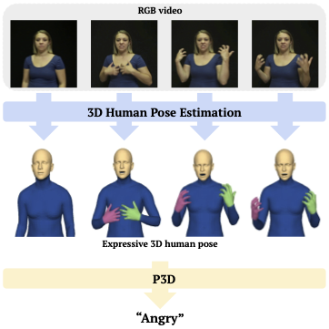
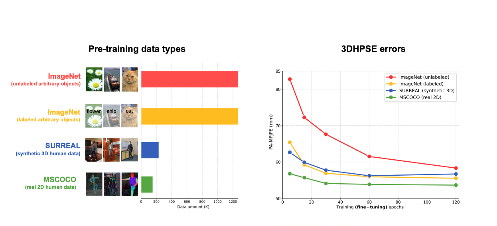
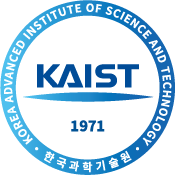
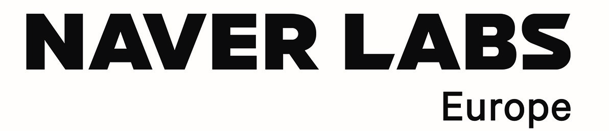

About me
I am a Ph.D candidate majoring in computer vision and machine learning at SNU computer vision lab, advised by
Prof. Kyoung Mu Lee.
Research Interests
Human-centric computer vision, including human pose estimation, behavior understanding and motion generation.
Publications

-
"Human Part-wise 3D Motion Context Learning for Sign Language Recognition", in ICCV 2023.
Taeryung Lee, Yeonguk Oh and Kyoung Mu Lee.

-
"Empirical Study of Pre-training a Backbone for 3D Human Pose and Shape Estimation", in ICLR 2023.
Hongsuk Choi*, Hyeongjin Nam*, Taeryung Lee, Gyeongsik Moon and Kyoung Mu Lee. (* equal contribution)
[ARXIV]

-
"MultiAct: Long-Term 3D Human Motion Generation from Multiple Action Labels", in AAAI 2023 (Oral presentation).
Taeryung Lee*, Gyeongsik Moon* and Kyoung Mu Lee. (* equal contribution)
[ARXIV] [CODE]
Education
-
 Ph. D. in Artificial Intellegence, Seoul National University (Mar. 2021 - )
Ph. D. in Artificial Intellegence, Seoul National University (Mar. 2021 - )
-

B. Sc. in Mathematical Science and Computer Science, KAIST (Mar. 2013 - Feb. 2021)
-
HS, Gyeonggi Science High School (Mar. 2010 - Feb. 2013)
Honors and Awards
-
Qualcomm-KAIST Innovation Awards 2019
Software Development Hackathon on Emotion Recognition from Video,
Taeryung Lee and Junwoo Choi
Experiences
-

Research internship (Remote), Naver Labs Europe, Grenoble, France (Apr. 2023 - Nov. 2023)
Projects
-
Development of Sign Language Recognition system (May 2022 - May. 2023)
With Samsung SDS
-
Automated cryptocurrency trading system (Dec. 2018 - )